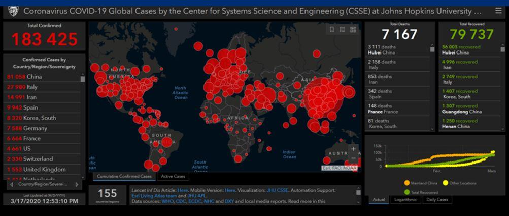
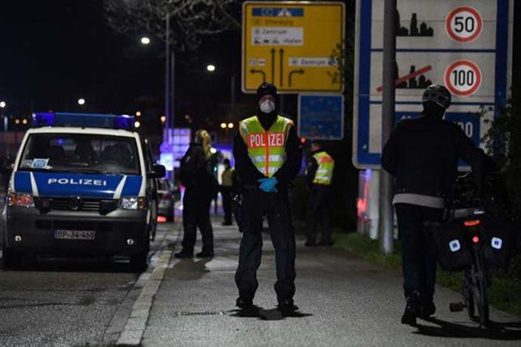
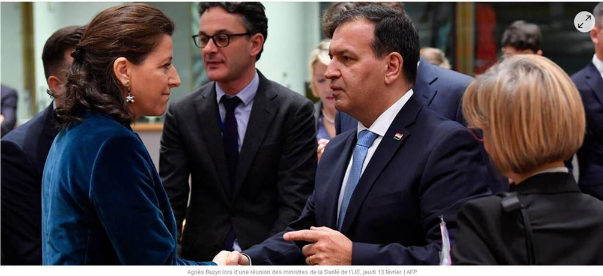
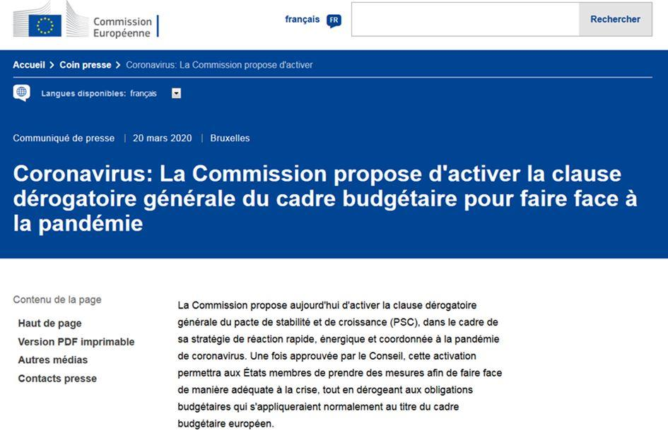
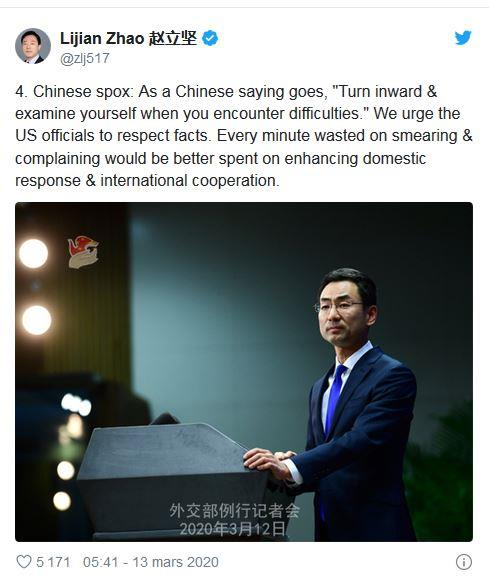
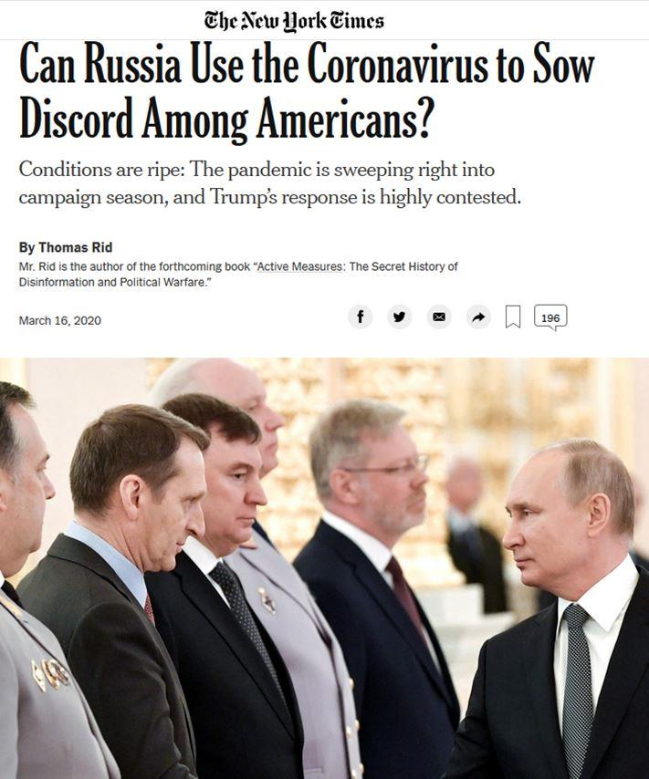
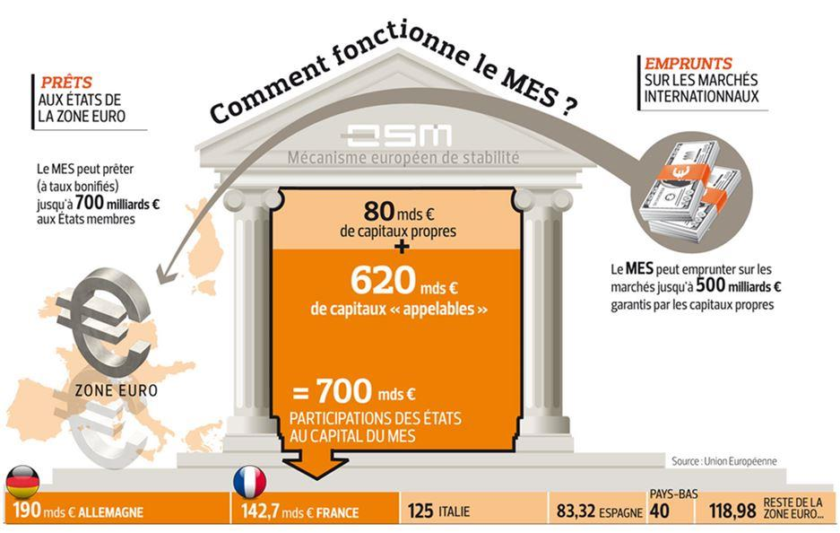
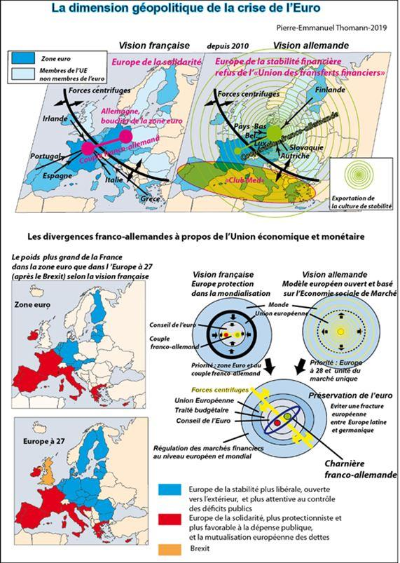

Covid 19 : un virus très géopolitique. Pandémie et rivalité des puissances
par Pierre-Emmanuel THOMANN
La nouvelle crise mondiale provoquée par la pandémie du virus COVID-19 pose pour l'instant plus de questions qu'elle n'apporte de réponses, mais on peut déjà affirmer que ce virus est un virus géopolitique, dans le sens ou les débats autour de cette crise sont de nature géopolitique, mêlant enjeux de santé et enjeux de pouvoir à un niveau jamais atteint précédemment aux échelles nationale, européenne et mondiale.
Toute crise est révélatrice des rapports de forces géopolitiques à l'échelle mondiale, et dévoile en partie les objectifs souvent implicites des acteurs en rivalité. Une crise peut être déclenchée volontairement ou surgir de manière inattendue, mais elle ensuite toujours été mise à profit pour modifier la hiérarchie du pouvoir toujours mouvante entre les États et les alliances.
Il est évidemment encore trop tôt pour faire des conclusions définitives sur les différentes thématiques relatives à cette pandémie du virus COVID-19, et il n'y en aura probablement jamais. Nous en sommes au niveau des hypothèses, mais il est important de garder un regard critique sur toute affirmation, y compris les avis des experts ou du personnel politique.
Depuis des années, les stratégistes ont émis l'hypothèse que les prochaines crises pourraient provenir autant des risques naturels que des risque industriels ou sanitaires inhérents aux société humaines, mais aussi de la menace, c'est à dire la surprise stratégique au moyen d'une offensive hybride de la part d'un ennemi, avec l'utilisation et la combinaison de nouvelles armes, y compris biologiques1. La guerre de communication semble aussi aujourd'hui prendre de plus en plus d'ampleur dans les crises actuelles et les instrumentaliser quelle que soit leur origine, accidentelle ou provoquée. Face à chaque crise, tous les scénarios doivent être pris en considération, sans tabous, et sur la durée.
L'origine animale du virus à l'origine de la pandémie est l'hypothèse principale qui est mise en avant par l'OMS2, mais la réponse ne serait pas définitive3.
Sans se préoccuper des origines précises de cette pandémie, on observe toutefois que cette crise est déjà en cours d'instrumentalisation dans le cadre des rivalités géopolitiques européennes et mondiales et la guerre de communication qui l'accompagne.
La crise sanitaire issue de cette pandémie révèle les rapports de forces en mouvement à l'échelle mondiale et les projets géopolitiques antagonistes derrière l'enjeu de santé immédiat qui se répercutent sur les décisions.
On note des réactions nationales différentes qui se situent entre deux extrêmes : Les promoteurs de la société ouverte et ses bénéfices économiques pour qui les victimes de la pandémie sont un effet collatéral de la nécessaire poursuite de la mondialisation et les adeptes de la fermeture et la maîtrise du territoire au niveau national selon le principe de précaution.
Cette crise révèle une très forte rivalité entre les États qui réagissent différemment en fonction de leurs modèles de société et leur régime politique, notamment vis à vis du degré d'ouverture à la mondialisation libérale, mettant la question des frontières au centre des enjeux. La crise issue de la pandémie est aussi une crise de la mondialisation libérale et ses flux de plus en plus anarchiques. Cette crise à aussi exacerbé la rivalité de pouvoir entre États nations et organisations multilatérales. Les promoteurs du supranationalisme aimeraient transférer le pouvoir aux instances multilatérales comme l'Union Européenne (UE) et déposséder les États-nations de leurs prérogatives et souveraineté. Les organisations multilatérales n'auront pourtant jamais les moyens de protéger efficacement les citoyens. Le discours qui oppose frontières nationales et coopération est fallacieux et idéologique.
Le message passé en boucle que « le virus n'a pas de frontières » par les promoteurs de l'Europe intégrée, démontre ainsi jusqu'où l'idéologie peut aller dans l'absurdité. Comme si le virus traversait la frontière avec le vent, les ondes, les oiseaux, internet on ne sait jamais. Le virus ne connait pas de frontières, précisément si les citoyens infectés par le virus traversent impunément cette frontière. La frontière est un filtre nécessaire pour la sécurité d'une nation, un instrument central de souveraineté et de maîtrise du territoire, et donc facteur de civilisation.
Dire que fermer les frontières ne sert à rien est un prétexte pour maintenir un système ouvert dans la durée, après des restrictions temporaires. Ursula von der Leyen, la présidente de la commission européenne, gardienne des traités, a critiqué les décisions de fermeture des frontières prises par les États membres en ordre dispersé au sein de l'espace de libre circulation Schengen4.

L’Allemagne ferme ses frontières tandis que la France se refuse seulement à filtrer
Dans un communiqué commun avec le président du Conseil européen Charles Michel, elle avait auparavant critiqué la décision de Donald Trump de fermer les frontières en provenance de l'espace Schengen, sans consultation préalable avec l'UE. La crise transatlantique issue des divergences entre la doctrine unilatéraliste de Donald Trump et la doctrine multilatéraliste de l'UE, mais aussi à l'importance accordée aux frontières, s'est encore renforcé. Cet épisode a aussi montré que contrairement aux États-Unis, l'UE ne sera jamais un État en mesure de prendre des décisions souveraines.
De nombreux États membres de l'UE n'ont pas attendu non plus la coordination exigée par la Commission européenne. Après bien des tergiversations, sur décision des États membres les frontières ont finalement été fermées ou contrôlées, non seulement entre l'espace Schengen et le reste du monde, mais aussi entre la plupart des États membres de l'UE.
On note aussi des différences de stratégies ente États membres pour combattre la pandémie. Tandis que la plupart des États ont finalement choisi de confiner leur population après des hésitations, les Pays-Bas, le Royaume-Uni et la Suède ont misé initialement sur une stratégie « d'immunité collective »5. Le Royaume-Uni a finalement changé de stratégie mais ceux qui persistent à privilégier l'immunité collective avec des meures moins drastiques de confinement deviendront-ils un risque pour les autres États membres qui n'ont pas choisi cette stratégie ? Cela pourra avoir un impact pendant une très longue période sur la réouverture des frontières une fois la pandémie surmontée dans les pays qui ont choisi le confinement strict.
En fonction de l'interprétation des résultats de tel ou tel modèle de société, le débat sur la société ouverte reprendra de plus belle. Ses promoteurs n’abandonneront pas de sitôt leur monde mondialisé et ouvert à tous les flux qui provoque et aggrave les crises, cette nouvelle pandémie en est l'illustration éclatante.
Selon le principe d'anticipation qui relève du cœur de la mission de l'État pour protéger ses citoyens face à un risque provenant de l'extérieur, la décision de renforcer les contrôles à propos de la circulation des personnes et la fermeture des frontières est une mesure de bon sens. Au sein de l'UE cette mesure a été prise de manière plus ou moins rapide selon les États. En réalité ces mesures auraient dû être prises depuis plus longtemps face à la crise migratoire en 2015. Cette crise n'a jamais été entièrement surmontée avant de rebondir au début de l'année 2020.
Le retour des contrôles aux frontières a ainsi donné lieu à un désaccord franco-allemand6. Après la décision de l'Allemagne de filtrer ses frontières, le gouvernement français, qui avait appelé à un feu vert préalable de l'UE, a cherché par la suite à donner l'illusion d'une décision concertée. L'Allemagne a anticipé avant la France en marquant sa souveraineté, sans entente bilatérale ou européenne préalable. D'autre part, la rhétorique guerrière du gouvernement français, confondant risque et menace, s'est démarquée de la sobriété allemande.
Comme lors de la crise migratoire, l'UE comme organe de décision a donc été dans un premier temps marginalisée face la crise sanitaire. La réaction tardive de l'UE a démontré qu'elle poursuit son processus de fragmentation géopolitique en raison des désaccords entre États membres et des idéologies quelle porte en déphasage avec le nouveau contexte mondial. Dans un deuxième temps, l'UE va toutefois chercher à jouer un rôle de coordination entre les États membres7, notamment pour la fermeture de l'espace Schengen, pour l'élaboration de réponses communes en matière socio-économique face à la crise économique qui va suivre, mais aussi en matière de politiques de santé, notamment le soutien à la recherche pour l'élaboration d'un vaccin.
Face aux crises et à l'urgence, l'UE n'émerge donc toujours pas comme acteur central pour les prises de décisions. La clause de solidarité européenne introduite par l'article 222 du traité sur le fonctionnement de l'Union européenne8 et qui faciliterait une coopération renforcée en cas d'attaques terroristes ou de catastrophes naturelles et humaines, n'a même pas été invoquée.
Toutefois, il est à craindre que les dogmes dominants de la société ouverte qui ont eu pour effet d'aggraver la crise ne s'imposent à nouveau au sein de l'UE, une fois la crise surmontée. La libre circulation des personnes et le maintien des frontières ouvertes, mais aussi l'idéologie du libre-échange devront pourtant être réévalués lorsqu'il faudra tirer les leçons de la crise et trouver des réponses communes entre États membres dans la durée. Il sera difficile d'y arriver sans une réforme des fondements et des paradigmes de l'UE. Les crises antérieures n'incitent pas à l'optimisme mais la suspension du pacte de stabilité de l'UE9 et la décision de la Banque centrale européenne d'un plan d'urgence de 750 milliards d’euros10 montrent que face à cette nouvelle crise, les ruptures systémiques sont tout de même envisageables. L'effet de ces mesures vis à vis du risque d'une disparité économique croissante entre les États de la zone euro et la viabilité de la monnaie unique européenne est encore inconnu. Les crises vont toutefois se succéder et s'additionner dans le monde marqué par les rivalités géopolitiques croissantes. Le projet européen fera face à un état de crise permanent qui sera l'aiguillon de la réforme, ou de son évaporation.
Si l'on cherche des exemples de modèles dont on pourrait s'inspirer à l'échelle mondiale, le cas de Taïwan, un territoire très proche de la Chine mais avec un nombre très faible de personnes affectées par le virus est très intéressant11. Il démontre que le contrôle des flux de personnes, l'isolement des personnes porteuse du virus, le confinement ciblé et l'exploitation du big data sont très efficaces comme mesures d'anticipation12. L'enjeu central pour faire face à une telle crise, est donc bien la maîtrise du territoire et le contrôle des frontières, et cela va évidemment à l'encontre de l'idéologie de la société ouverte.
La maîtrise du territoire, qui est le préalable à la souveraineté, est une combinaison de mesures incluant limites à la liberté de circulation des personnes par le contrôle des frontières, voire leur fermeture temporaire, l'exploitation des informations récoltées aux frontières sur les personnes et dans la profondeur du territoire avec les nouvelles technologies, la reconnaissance faciale et la traçabilité des mouvements des citoyens sur le territoire avec la géolocalisation.
Une autre leçon de cette crise est qu'à l'avenir, l'exploitation du big data et l'intelligence artificielle seront aussi des outils incontournables de souveraineté pour la géopolitique du futur !
La pandémie a aussi pour résultat d'hystériser les débats sur les questions immédiates et d'occulter les enjeux de plus long terme. La pandémie du Coronavirus en elle-même se transforme en enjeu géopolitique, car une nouvelle hiérarchie du pouvoir mondial va émerger à la suite de cette crise. Dans le contexte de la rivalité des puissances, cette crise confirme l'évolution vers un élargissement des facteurs de puissance. Les enseignements à tirer seront importants pour faire face à des pandémies plus graves mais aussi en cas de guerre biologique. Les politiques de santé, la maîtrise de la recherche médicale et la production de médicaments, la possession d'un vaccin, (ou d'une arme biologique, le grand tabou), la stratégie choisie pour combattre une pandémie, et l'utilisation de la communication stratégique pour rassembler la nation, discréditer les rivaux, et ensuite promouvoir et imposer un modèle politique sur son propre territoire ou sur celui des autres, deviennent des facteurs de puissance, comme l'outil militaire, économique, ou énergétique...
Pendant que les débats se focalisent surtout sur les enjeux immédiats de santé, la guerre géoéconomique se profile derrière cette pandémie. Une société allemande de fabricants de vaccins (CureVac) travaillant sur un vaccin contre le Coronavirus a fait l’objet d’une tentative de prise de contrôle par le gouvernement américain13.
Celui-ci aurait cherché à délocaliser le laboratoire aux États-Unis afin de s'approprier les résultats de ses recherches. Le gouvernement allemand s'est déclaré opposé à cette prise de contrôle et a accusé le gouvernement américain de vouloir monopoliser un éventuel vaccin au seul bénéfice des États-Unis, tandis les Allemands ont annoncé vouloir en faire bénéficier tous les Européens.
Le virus renforce donc la guerre géoéconomique entre l'Allemagne et les États-Unis.
La guerre de communication qui a immédiatement accompagné l'extension de la pandémie épouse aussi les rivalités géopolitiques mondiales, et particulier entre les États-Unis et la Chine. Les États-Unis et leurs relais atlantistes ont commencé par accuser la Chine d'être exclusivement responsable de ce nouveau désordre mondial, en accusant la non-transparence et la volonté du gouvernement chinois de dissimuler l'épidémie. Certains médias américains ont aussi diffusé le narratif selon lequel le virus provenait d'un laboratoire chinois à Wuhan, information considérée comme une fake news par d'autres médias14.
Les Chinois ont demandé en retour aux États-Unis de répondre à leurs soupçons à propos d'une origine américaine du virus15. Les Chinois soulignent qu'une délégation militaire s’était rendue à Wuhan en octobre pour les Jeux mondiaux militaires (organisée tous les quatre ans), lieu d'éclosion de l'épidémie selon l'OMS. A propos des accusations sur la gestion de la pandémie par la Chine, les grands médias en Europe collent assez largement au narratif provenant des États-Unis avec pour effet de pousser à l'émergence d'une alliance occidentale contre la Chine.
Les accusations réciproques des acteurs dans ce contexte de rivalité stratégique ne reposent sur aucune preuve, mais c'est la dégradation de l'image du rival qui compte.
Le think tank américain Atlantic Council a même proposé d'invoquer l'article 5 de l'OTAN pour lutter contre le virus « d'origine Chinoise » ont-ils bien précisé, afin de renforcer l'unité transatlantique mise à mal par manque de solidarité initiale du président Trump vis à vis des Européens et les dissensions internes à l'UE. Il s'agit aussi de contrer l'influence de la Chine qui utilise la communication stratégique pour mettre en valeur ses gestes de solidarité croissants vis à vis des États-membres de l'UE qui ont eux-mêmes sollicité son aide16.
Les Taïwanais de leur côté estiment que s'ils ont des bons résultats dans leur lutte contre la propagation du virus, c'est parce qu'ils ne sont pas membres de l'OMS qui aurait subit les pressions des Chinois pour ne pas recommander la fermeture des frontières17.
La guerre de communication entre les États-Unis et la Russie et la poursuite de la fabrique médiatique d'une « nouvelle guerre froide », n'a non plus pas tardé à éclater. Certains médias américains ont dénoncé une manœuvre russe pour semer la discorde aux États-Unis par anticipation et sans éléments tangibles, mais en se référant principalement aux multiples crises de la guerre froide18. Suite aux accusations de la part des Américains de propager des fakes news sur l'origine du virus, les Russes les ont accusés en retour de divulguer de fausses allégations19.
Le président russe a aussi déclaré qu'une campagne de désinformation était à l'œuvre depuis l'étranger pour faire croire à un nombre plus élevé de malades en Russie (le nombre de cas reporté est pour l'instant très faible comparé à la Chine, l'Europe et les États-Unis) pour semer la panique dans le pays20. Pour faire baisser les tensions, la Russie a livré aux Etats-Unis, l'un des pays les plus touchés au monde par cette crise sanitaire, de l'aide humanitaire pour lutter contre la pandémie21.
L'UE n'a pas tardé à s'engager de concert avec les États-Unis dans cette guerre de communication pour accuser la Russie. La presse européenne a largement repris le narratif de l'UE qui accuse la Russie d'avoir initié une campagne de désinformation à propos de la pandémie afin de déstabiliser les sociétés européennes dans un rapport non publié du service de communication stratégique du service européen pour l'action extérieure22. Ce document est évidemment non accessible au public mais il a été distribué à certains médias pour engager une opération de communication destinée à ternir l'image de la Russie. La Russie a répliqué en soulignant le caractère non fondé de ces allégations23. Un document public issu de l'unité du service européen pour l'action extérieure (SEAE) de l'UE chargée de combattre la désinformation provenant de la Russie (East StratCom Task Force) a pour sa part listé les publications des médias russes quelle estime être équivalentes à des fake news24. Il apparait en réalité que ces informations sont très disparates et variées, et ne différent pas des hypothèses aussi farfelues et des fake news publiées par les médias au sein de l'Union européenne et aux États-Unis, mais seule la Russie est singularisée dans ce document. A partir de cette méthode biaisée, l'UE produit son propre narratif fallacieux qui vise à ternir l'image de la Russie pour promouvoir une idéologie euro-atlantiste exclusive. Les médias dans l'UE ont portant eux-mêmes largement insisté sur les désaccords transatlantiques, le manque de solidarité entre États membres de l'UE, les désaccords politiques profonds face à la gestion tardive et désordonnée de la crise et souvent le déni de réalité par idéologie libérale de la part des gouvernements et de la bureaucratie de l'UE25.
Le virus a aussi bouleversé les plans de l'OTAN avec la réduction des manœuvres militaires Defender-Europe 20 clairement dirigées contre la Russie26. Le format de ces manœuvres, initialement prévues jusqu'en juin, a été drastiquement réduit après bien des hésitations, pendant que certains États européens prenaient déjà des mesures de restriction à la libre circulation des personnes.
Le 5 mars, le secrétaire général de l'OTAN, Jens Stoltenberg déclarait que la manœuvre se poursuivrait27, alors même que l'accès au quartier général de l'OTAN à Bruxelles avaient déjà été restreints en raison des risques de contagion. Le 13 mars, l'OTAN précisait toutefois que la manœuvre ne serait pas annulée dans sa globalité28. Plus de 5000 militaires américains étaient déjà arrivés sur le sol européen (plus de 20 000 soldats américains sur 37 000 devaient y prendre part). Ces exercices qui avaient débuté fin janvier avec le débarquement des troupes et matériel en Allemagne devaient se
poursuivre jusqu'en juin en Pologne et dans les pays baltes avec la participation de plus de 18 pays. L'objectif de ces manœuvres était de tester l'état des infrastructures pour la mobilité des troupes de l'OTAN, notamment de l'Allemagne vers l'Europe orientale, pour instaurer un « Schengen militaire ». Le maintien de ces exercices en l'état, tout cela pour faire croire à une menace russe qui n'existe pas, aurait été extrêmement mal perçu. Des manifestations organisées par la société civile allemande avaient été aussi planifiées contre ces manœuvres29. La Norvège avait déjà annulé la manœuvre Cold Response 2020 qui devait suivre Defender-Europe20. Ces manœuvres n'ont pas été annulées pour autant, contrairement à ce qui a pu être annoncé par certains médias30, mais ont été interrompues et ramenées à un format très réduit, alors que les frontières ont été fermées et des mesures de confinement et de réduction de la circulation ont été prises pour les populations dans l'Union européenne31.
L'Europe n'a pas été épargnée non plus par les désaccords. La question du « patient zéro » , c'est à dire la provenance géographique du premier porteur du virus qui s'est ensuite répandu sur le territoire d'un autre État, a aussi fait l'objet d'une polémique entre les Allemands et les Italiens. Suite à la décision de l'Allemagne de fermer sa frontière avec l'Italie, un médecin italien a déclaré que le patient zéro en Italie provenait d'Allemagne32. Les Européens soulignent aussi que le « patient zéro » aux États-Unis, avait plus de chance de venir d'Asie que d'Europe33 Enfin, la Chine34 mais aussi la Russie35 et Cuba ont suppléé au manque de solidarité initial avec l'Italie de la part des autres États membres de l'UE36 en envoyant des équipes de médecins et du matériel, notamment des masques et matériel médical. Alors qu'ils ont répondu à la demande expresse du gouvernement italien déçu par la réaction de l'UE, ils ont ensuite été accusés de profiter de la défaillance de l'UE pour mener une campagne de communication et de promotion de leur modèle contre le système occidental37. Dans les Balkans, comme la Grèce38, la Serbie, un État pivot, a aussi fait appel à la Chine en dénonçant le manque de solidarité de l'UE39. L'UE a ensuite réagit et cherché à encourager et coordonner la solidarité entre les États-membres et communiqué à son tour pour tenter d'effacer sa mauvaise image quelle avait contracté en début de crise40.
En ce qui concerne les relations internes à l'Union européenne, la pandémie a réveillé les fractures entre l'Europe du Nord et l'Europe du Sud et à la charnière, la rivalité géopolitique entre l'Allemagne et la France.
La pandémie du COVID-19 va t'elle provoquer un rebond de la crise de l'euro ?
Saisissant l'opportunité de cette crise, la France, l'Italie, l'Espagne, le Portugal, l'Irlande, la Grèce, la Belgique, le Luxembourg et la Slovénie ont proposé de créer un instrument de dette commun (qu'on nomme les coronabonds41) émis par une institution européenne pour lever des fonds sur les marchés. Il s'agirait d'assurer un financement des mesures dans les différents États membres destiné à faire face à la crise économique qui pointe à l'horizon.
Le premier sommet européen du 27 mars supposé faire émerger un compromis sur les mesures européennes à prendre afin d'anticiper la crise économique fût un échec42. Son communiqué assez vague a montré qu'il y avait désaccord initial.
Les « coronabonds » ont été écartés car l'Allemagne et les Pays-Bas en particulier ne sont pas prêts à accepter des dettes mutualisées et donc l'émergence d'une « communauté de destin des dettes » ou l'Allemagne et les pays du Nord seraient garants en dernier ressort des dettes des pays du Sud. Cette option pourrait éventuellement aboutir à un saut fédéral européen que la plupart des Allemands ne soutiennent pas. Les Allemands en général ne sont évidement pas favorable à être solidaires sans droit de regard sur les politiques économiques des pays du Sud. Cette crise inédite rend pourtant plus difficile le maintien de critères stricts accompagnés de réformes économiques au niveau national en contrepartie des prêts et sous surveillance de l'UE car ils touchent à la souveraineté des États.
Les Allemands sont plus favorables à l'emploi du Mécanisme européen de Stabilité (MES)43 qui avait été créé en 2012 lors de la crise de l'euro, mais les contreparties inévitables exigées ne sont acceptables en l'état, ni pour l'Italie, ni pour les autres pays du Sud en général.
On a donc deux camps qui se font face et cette situation est très semblables au clivage de la crise de l'euro : la France, l'Italie, l'Espagne, le Portugal, l'Irlande, la Grèce, la Belgique, le Luxembourg et la Slovénie qui plaident pour plus de solidarité (et moins de contreparties) et ceux qui sont opposés à plus d'aides (mais exigent aussi plus de contreparties) l'Allemagne, les Pays-Bas, l'Autriche, la Finlande, le Danemark...
Chaque crise européenne fut dans le passé une opportunité assumée pour procéder à une intégration supplémentaire. Ces épisodes ont chaque fois été l'occasion d'une lutte entre fédéralistes européens et partisans de l'État nation. Pour prendre des décisions politiques d'envergure, l'UE ne l'a jamais fait en dehors d'une situation « au bord du gouffre ».
La crise économique qui va suivre la pandémie n'est pas encore assez visible pour dramatiser les sommets européens.
Toutefois, un saut d'intégration est aujourd'hui très difficile car nous sommes face à un blocage du cycle intégrationniste, tandis qu'un cycle géopolitique vers plus de fragmentation européenne s'est enclenché, notamment avec le Brexit et la crise migratoire. Pour les partisans de l'intégration, cette crise est une opportunité pour inverser la tendance mais le virus COVID-19 peut aussi s'avérer être une bombe à fragmentation géopolitique européenne.
Une entente forte franco-allemande qui dicterait ses conditions à l'Italie comme lors de la crise de l'euro est cette fois-ci difficile à reproduire, car les désaccords franco-allemands sont plus importants au sein du couple Merkel-Macron. Toutes les propositions récentes de la France ont été jusqu'à présent largement déclinées par l'Allemagne. L'Italie semble résolue cette fois-ci à défendre ses intérêts de manière très ferme dans un contexte de chute de la confiance des Italiens dans l'UE.
Le scénario le plus probable à ce stade est la poursuite des désaccords de fond et la poursuite de la fragmentation européenne que les gouvernements vont tenter de réduire et masquer par des plans communs moins ambitieux et décidés à l'arraché. A traités constants, il s'agira probablement d'un ensemble de nouvelles formules transitoires et de mécanismes pérennes uniquement dédiés à la crise, liées à la pandémie. On peut imaginer la combinaison de différentes formules comme la création d'un nouveau fond financier en dehors ou intégré aux structures de l'UE, la mise en action du MES, des prêts de la Banque européenne d'investissement (BEI), des programmes européens de soutien aux systèmes de retraites... Ces mesures uniquement dédiées aux dégâts liés à la crise du COVID-19 éviteraient de trancher définitivement entre l'approche intergouvernementale et communautaire.
Dans le passé, les négociations pour surmonter les crises européennes furent l'occasion du positionnement du « couple franco-allemand » au centre de gravité du pouvoir de l'UE. L'entente franco-allemande a toutefois été de plus en plus sérieusement mise à mal par les désaccords qui se sont accumulés à l'occasion des crises plus récentes de l'UE. Sur les temps longs, les finalités européennes divergent entre les gouvernements allemand et français et la rivalité de pouvoir entre les deux pays est l'épicentre de la crise de l'euro, aujourd'hui en « veilleuse », mais prête à rebondir si les désaccords se prolongent, ou si les mesures communes ne suffisent pas à surmonter la crise économique et les différences de développement croissantes au sein de la zone euro.
Les Français ont pour ambition de renforcer la dimension politique de la zone euro à 19 dans une Union européenne, selon leur perception, trop grande et dominée par l’Allemagne installée dans son centre géographique. Ils espèrent faire émerger un gouvernement économique plus favorable à la vision française d’un contrôle de l’économie par la politique, tout en préservant le rôle de l’Allemagne comme « bouclier de la zone euro » dans la mondialisation, et profitant à la France économiquement plus faible. Les Allemands, sans être univoques, se méfient de cette conception et souhaitent maintenir le centre de gravité géopolitique à l’échelle des 27 (28 avant le Brexit), car ils en occupent le centre. Ils proposent à l’inverse une extension de leur modèle économique au reste de l’Union européenne tout en voulant éviter une « Europe des transferts financiers » (Transferunion). En refusant une avant-garde, ils veulent aussi éviter de créer de nouvelles fractures avec les États-membres d’Europe centrale et du Nord qui ne font pas partie de la zone euro comme la Pologne et la Suède.
La rivalité entre l'Allemagne (proche des pays du Nord) et la France (proche des pays du Sud, dont l'Italie qui tient une posture désormais très ferme à l'occasion de cette crise) pour la gestion de la zone euro restera une question géopolitique centrale et irrésolue.
En résumé, ce virus tombe à pic pour les acteurs qui cherchent à modifier les rapports de forces géopolitiques. Dans une première séquence, la pandémie a renforcé la rivalité entre États, au lieu d'aboutir à plus de coopération. La coopération internationale sera pourtant nécessaire pour surmonter cette pandémie. Les différentes stratégies des États constituent des laboratoires intéressants afin de s'inspirer des meilleures pratiques. Les Européens seraient bien avisés d'apprendre, examiner, puis s'inspirer et adapter à leurs caractéristiques nationales, en fonction des erreurs et des succès issus des pays qui n'étaient pas les plus proches en termes d'alliances géopolitiques, la Chine comprise car lieu d'origine de la pandémie, mais aussi Taïwan, la Corée du Sud, le Japon et évidemment la Russie, seul État de civilisation européenne dont le territoire est à cheval sur l'Europe et l'Asie. Il apparait que ces pays sont bien plus avancés que les Européens en termes de maîtrise du territoire, de contrôle des frontières et traçabilité de la pandémie dans la population grâce à la digitalisation et l'exploitation du big data. La nouvelle frontière de la géopolitique est précisément le big data et l'intelligence artificielle. La manière dont la Russie va réagir sur le plan économique à la crise économique mondiale qui va suivre la pandémie sera aussi particulièrement intéressant à suivre. Il est très probable que la Russie absorbe mieux le choc économique après sa plus grande isolation vis à vis des marchés financiers internationaux et des circuits d'importations44. C'est grâce à sa politique d'accumulation de réserves financières, mais aussi grâce à sa politique de substitution des produits agricoles entreprise à la suite des sanctions à son encontre depuis la crise de 2014 en Ukraine que la Russie pourrait sortir plus vite de la crise.
Les Européens seront aussi en face de l'énorme défi, après avoir maitrisé la pandémie, d'affronter la crise économique et politique qui va suivre.
Les Européens pourraient profiter de cette crise pour progresser en matière de politiques de résilience et de souveraineté économique, de renationalisation des secteurs stratégiques, mais aussi de digitalisation et développement de l'intelligence artificielle. Avec la crise du coronavirus, de nouvelles solidarités émergent inéluctablement à l'échelle eurasienne, notamment avec la Russie et la Chine. Plutôt que de mener un combat d'arrière-garde en se focalisant sur un euro-atlantisme exclusif qui a démontré son inutilité pour protéger les citoyens européens face aux crises multiples, les Européens seraient aussi bien avisés d'élargir leurs alliances pour tirer avantage du monde multipolaire, tout en préservant leurs intérêts nationaux et leurs valeurs propres à leur civilisation. Face à la crise économique qui va suivre la pandémie, la diplomatie des sanctions de l'UE contre la Russie apparaît d'autant plus absurde qu'elle risque de limiter la reprise de la croissance nécessaire après la crise, en plus de leur inefficacité avant la pandémie. La baisse des prix du pétrole est aussi l'occasion de renforcer le partenariat énergétique avec la Russie.
Cette crise est une occasion supplémentaire pour réformer le projet européen qui est basé sur les paradigmes obsolètes de l'Union européenne, c'est à dire la mondialisation libérale qui implique la société ouverte, le sans-frontières, l'immigration de masse. Jamais l'adage du philosophe allemand Carl Schmitt ne fut autant d'actualité : « Est souverain celui qui décide de la situation d'exception ». La coopération européenne est nécessaire, mais sur des bases différentes de l'idéologie d'intégration, qui en réalité n'a pas beaucoup fait progressé la solidarité européenne. L'enjeu sera désormais la redécouverte de la solidarité entre citoyens et nations, la notion de souveraineté, la maîtrise du territoire, le contrôle des frontières, le resserrement géographique (produire, travailler et consommer local dans la mesure du possible, ce qui implique un protectionnisme intelligent et la renationalisation de certains domaines stratégiques), le rôle central de l'État, de la nation et les alliances internationales plus équilibrées.
Il apparait aussi urgent de développer entre Européens une plus grande conscience géopolitique à l'échelle continentale. L'autre grande leçon à tirer de cette crise est le relâchement de la relation transatlantique. Un meilleur équilibre entre espace euro-atlantique et espace eurasien est la clé d'un repositionnement des nations européennes. La nouvelle frontière d'un projet européen réformé se situe à l'Est.
Le scénario le plus probable à ce stade est la poursuite des désaccords de fond et la poursuite de la fragmentation européenne que les gouvernements vont tenter de réduire et masquer par des plans communs moins ambitieux et décidés à l'arraché. Des plans massifs de soutien à l'économie sont en phase d'élaboration au niveau national. Au niveau de l'UE, à traités constants, il s'agira probablement d'un ensemble de nouvelles formules transitoires et de mécanismes pérennes uniquement dédiés à la crise liée à la pandémie. On peut imaginer la combinaison de différentes formules comme la création d'un nouveau fond financier en dehors ou intégré aux structures de l'UE, la mise en action du MES, des prêts de la Banque européenne d'investissement (BEI), des programmes européens de soutien aux systèmes de retraites... Ces mesures uniquement dédiées aux dégâts liés à la crise du COVID-19 éviteraient de trancher définitivement entre l'approche intergouvernementale et communautaire.
P.-E. T.
NOTES ET RÉFÉRENCES
1. En matière sanitaire, la circulation des personnes et des marchandises, la concentration de populations dans des mégalopoles et la défaillance des systèmes de santé dans certaines zones favorisent la survenue de crises majeures. Le risque existe notamment d’une nouvelle pandémie hautement pathogène et à forte létalité résultant, par exemple, de l’émergence d’un nouveau virus franchissant la barrière des espèces ou d’un virus échappé d’un laboratoire de confinement Livre Blanc sur la défense et la sécurité nationale, 2013, p.46. Dans le livre blanc de 2008, les notions de surprise et de rupture stratégique, avaient été introduites. Défense et sécurité nationale, Le Livre blanc, 2008, p.39
41. L'idée des coronabonds n'est pas nouvelle et s'inspire des eurobonds, dont l'idée avait émergé lors de la crise de l'euro, mais que l'Allemagne a toujours refusé pour les mêmes raisons qu'aujourd'hui.
43. Le MES est une institution financière internationale dont l'objectif est d'aider sous conditions (réformes économiques) des États de la zone euro en difficulté pour limiter les taux d'intérêt de ces pays en levant des fonds sur les marchés financiers. Le MES faisait l'objet d'une réforme difficile en raison des désaccords entre Etats-membres lorsque la crise sanitaire a démarré.
Partager cette page